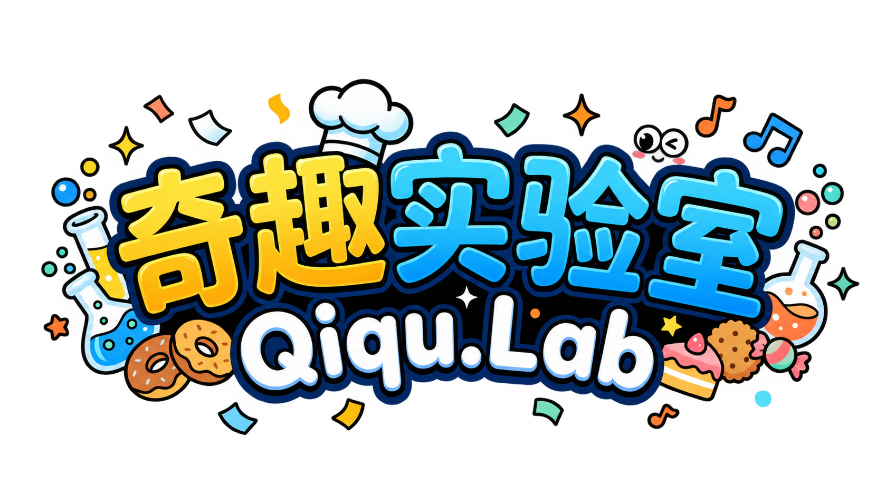

GitHub · Source of Truth
Skills, Cases, Templates, examples and evaluation rules stay versioned, reviewable and reusable in the repository.
SkillsCasesTemplatesEvaluation

/ Skills4QiquLabDiscover a working case, inspect the method, remix its template, generate a new result, and send the improved work back into the community.
Skills, Cases, Templates, examples and evaluation rules stay versioned, reviewable and reusable in the repository.
The same assets become discoverable, editable and executable through a visual workflow instead of a folder tree.
Start from a real result. Open its Prompt, Tags, Template and source Skill.
Change variables instead of starting from zero. Keep the reusable structure intact.
Publish the result. Strong remixes become new Cases and feed the repository back.
Validated methods are versioned in GitHub and automatically become part of the next discovery cycle.